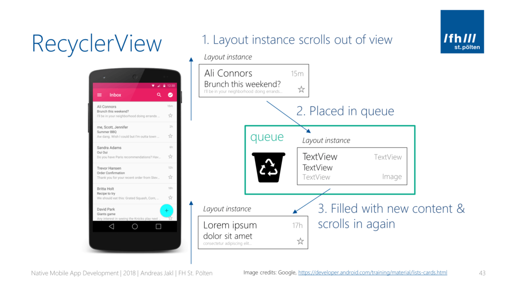
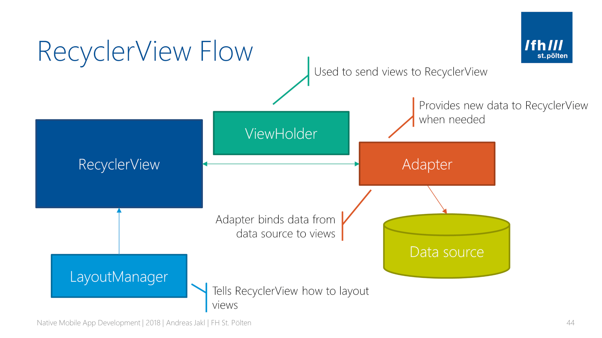
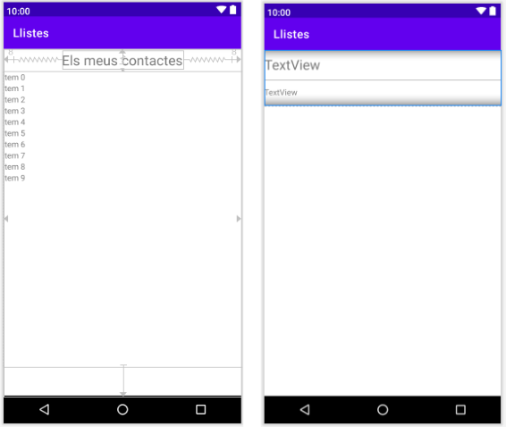
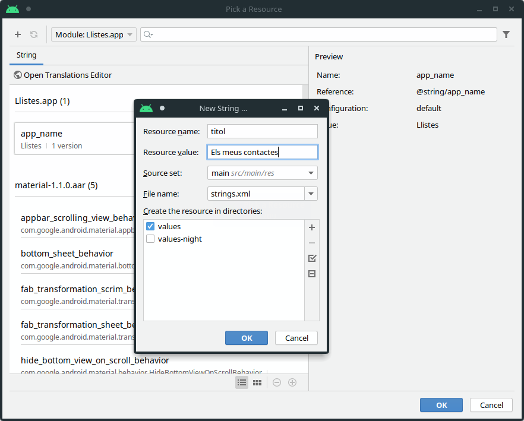
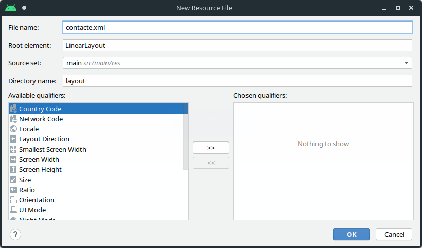
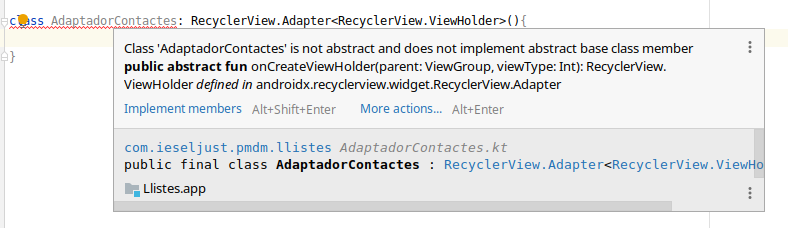
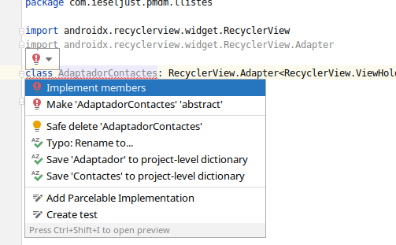

4. El component RecyclerView
RecyclerView
El component RecyclerView ens mostra una llista de desplaçament d’elements amb conjunts de dades variables i de grans dimensions. La informació que bolquem sobre un RecyclerView pot vindre de diverses fonts, com puguen ser fitxers, bases de dades locals o d’Internet.
Cadascun dels elements que es mostren en la llista tindrà un disseny determinat amb diversos elements de tipus View.
Esquemàticament, podem veure-ho com un contenidor que conté diferents instàncies d’un layout concret (ja siga un LinearLayout amb dos textos, text i imatge, o una targeta).

El principal avantatge del RecyclerView respecte al clàssic ListView és que les diferents instàncies dels dissenys que desapareixen de la pantalla quan es fa *scroll^no es destrueixen, sinò que es “reciclen” amb nova informació per mostrar els elements que “entren” en la pantalla.
1. Quins elements intervenen en tot açò? Què necessitarem?
Per implementar un RecyclerView necessitem diversos elements:
- Un contenidor que mostre de forma ordenada els diferents elements. Aquest contenidor és el propi RecyclerView i s’especificarà en un docuement XML. La forma d’ordenar els elements la determinarà un Gestor de Disseny o LayoutManager.
- Un disseny per a cadascun dels elements que volem mostrar a la llista. Aquest disseny el definirem amb altre document XML.
- També necessitarem saber quines són les dades d’origen que volem mostrar a la llista. Aquestes poden provindre des d’un simple vector d’strings fins a un ArrayList d’objectes de determinada classe. En alguns llocs sol nomenar-se aquesta estructura com a DataSource o DataSet.
- Ja tenim els dissenys per una banda i les dades per altra… pel que només ens queda lligar-los. D’això s’encarregarà un Adapter, que serà el component més important i que més feina ens portarà quan treballem amb RecyclerView. Aquest component, a més, contindrà una classe anomenada ViewHolder que s’encarregarà de fer la correspondència entre el conjunt de dades DataSet i el disseny de la vista dels elements.

2. Mans a l’obra
Una vegada tenim clars els diferents elements, anem a vore com fer la implementació.
Al projecte llistes disposeu de la implementació d’aquest exemple.
Comencem per una llista senzilla, que mostre ítems d’un parell d’strings, com per exemple, un nom i una descripció. Per a això, creem una nova aplicació Llistes, a partir d’una Empty Activity.
2.1. Definint les vistes
Amb el dissenyador de vistes, definim els diferents Layouts, tant per a la vista amb el RecyclerView, com per als components individuals.
Aquestes quedaran de la següent manera:

Anem per parts alguns detalls del disseny.
La vista principal activity_main.xml conté un títol i un RecyclerView amb la llista de contactes, i el seu contingut és el següent:
<?xml version="1.0" encoding="utf-8"?>
<androidx.constraintlayout.widget.ConstraintLayout xmlns:android="http://schemas.android.com/apk/res/android"
xmlns:app="http://schemas.android.com/apk/res-auto"
xmlns:tools="http://schemas.android.com/tools"
android:layout_width="match_parent"
android:layout_height="match_parent"
tools:context=".MainActivity">
<androidx.recyclerview.widget.RecyclerView
android:id="@+id/RecyclerViewContactes"
android:layout_width="417dp"
android:layout_height="513dp"
android:layout_marginStart="8dp"
android:layout_marginTop="8dp"
android:layout_marginEnd="8dp"
android:layout_marginBottom="55dp"
app:layout_constraintBottom_toBottomOf="parent"
app:layout_constraintEnd_toEndOf="parent"
app:layout_constraintStart_toStartOf="parent"
app:layout_constraintTop_toBottomOf="@+id/textView" />
<TextView
android:id="@+id/textView"
android:layout_width="wrap_content"
android:layout_height="wrap_content"
android:layout_marginStart="8dp"
android:layout_marginTop="8dp"
android:layout_marginEnd="8dp"
android:text="@string/titol"
android:textSize="24sp"
app:layout_constraintBottom_toTopOf="@+id/recyclerView"
app:layout_constraintEnd_toEndOf="parent"
app:layout_constraintHorizontal_bias="0.498"
app:layout_constraintStart_toStartOf="parent"
app:layout_constraintTop_toTopOf="parent"
app:layout_constraintVertical_bias="0.063" />
</androidx.constraintlayout
Fixeu-vos que al TextView del títol s’indica aquesta cadena com a un recurs d’String android:text="@string/titol". Per tal d’indicar el valor “Els meus contactes” a aquesta cadena, hem de generar aquest recurs. Per a això, a la vista de disseny, i amb el TextView seleccionat, ens fixem en el botó menut que hi ha al costat de l’atribut text i fem clic en ell per obtir el selector de recursos. En aquest selector, farem clic al + que hi ha a la part superior i crearem el nou recurs:

Si no ens demana generar automàticament la dependència del RecyclerView al recurs, caldrà indicar-la al fitxer de construcció del projecte build.gradle:
implementation 'androidx.recyclerview:recyclerview:1.1.0'
Ja tenim el Layout principal amb el RecyclerView generat, però ens falta fer el disseny per a cadascun dels ítems individuals que poblaran aquesta llista.
Per a això, hem de crear un nou recurs de tipus Layout. Per a això, des de la vista d’Android, seleccionem Res > Layout > New > Layout Resource File, i creem el fitxer contacte.xml amb un Root Element de tipus Linear Layout:

El disseny està compost de dos TextViews, tal i com hem vist en la imatge dels layouts que anem a utilitzat. Utilitzarem el LinearLayout* original amb orientació *vertical* i dins d’ell afegirem els dos TextViews per al nom i la descripció. El fitxer XML resultant tindrà la següent forma:
<?xml version="1.0" encoding="utf-8"?>
<LinearLayout xmlns:android="http://schemas.android.com/apk/res/android"
android:layout_width="match_parent"
android:layout_height="96dp"
android:orientation="vertical">
<TextView
android:id="@+id/nom"
android:layout_width="match_parent"
android:layout_height="0dp"
android:layout_weight="2"
android:gravity="center_vertical"
android:text="TextView"
android:textSize="24sp" />
<TextView
android:id="@+id/descripcio"
android:layout_width="match_parent"
android:layout_height="wrap_content"
android:layout_weight="1"
android:gravity="center_vertical"
android:text="TextView" />
</LinearLayout>
Com veiem, en aquest xml tenim els identificadors nom i descripcio, que utilitzarem posteriorment per tal d'omplir els buits d’aquesta plantilla.
2.2. Definint el model
El nostre model serà la següent classe Persona (com que és curta la podem definir en la mateixa MainActivity.kt):
data class Persona (val nom:String, val descripcio: String)
Aquesta classe només contindrà estos dos atributs nom i descripció. Si fem ús d’aquest constructor primari, no farà falta ni indicar el cos. Kotlin per defecte ens generarà els accessors necessaris. A més, hem definit la classe com a una Data Class de Kotlin, que ens aporta algunes funcionalitats addicionals.
Data Classes
Es tracta de classes Kotlin que només van a contindre atributs, i no realitzen cap funcionalitat. Kotlin, amb estes classes ens ofereix:
- Definir les propietats en el propi constructor, i ens estalvia escriure el propi constructor i els mètodes accessors,
- Incorpora els mètodes
equals()ihasCode()- Afig el mètode
componentX(), per extreure diversa informació d’un objecte amb una instrucció,- Afig el mètode
copy(), per duplicar objectes.Més informació de les data classes en: https://devexperto.com/data-classes-kotlin/
2.3. Creant l’adaptador
Com hem comentat, l’adaptador és la classe que connecta el RecyclerView amb les dades (DataSet). Cada vegada que el RecyclerView necessita reciclar un ítem de la llista, fa ús de l’adaptador per obtindre aquest ítem a partir de les dades, concretament, fa ús d’una classe interna a aquest anomenada ViewHolder, que serà qui s’encarregarà de la correspondència entre aquest DataSet i el disseny de la vista dels elements individuals, al nostre cas, definida al fitxer contacte.xml.
La interacció entre el component RecyclerView i l’Adaptador passa pels següents punts:
- Per tal de dibuixar la llista d’elements en la pantalla, el RecyclerView pregunta a l’adaptador quants ítems té en total. Açò s’implementarà amb un mètode anomenat
getItemCount(). - Quan el RecyclerView necessita afegir una nova fila o instància de la vista en memòria, invoca el mètode
onCreateViewHolder(). En aquest punt, l’adaptador prepara el disseny definit a l’XML per a la vista (al nostre cascontacte.xml). - Quan un ViewHolder ja creat s’ha de reutilitzar, el RecyclerView li demana a l’adaptador que actualitze les seues dades. És a dir, utilitza el mateix disseny, però únicament modificarà les dades que es mostren. Açò s’aconsegueix sobreescrivint el mètode
onBindViewHolder().
Anm a començar per aquesta classe ViewHolder, que ens farà part de la feina.
Creant el ViewHolder
Tot i que podem definir-la dins la classe de l’adaptador, per separar funcionalitat anem a definir-la en el seu propi fitxer.
Per crear la nova classe, localitzem en la Vista Android la carpeta java/com.ieschabas.pmdm.llistes o la del projecte que tinguem definida, i amb el botó dret seleccionem New > Kotlin File/Class.
Creem la classe contacteViewHolder com a una subclasse de RecyclerView.ViewHolder, al fitxer contacteViewHolder.kt:
import android.view.View
import androidx.recyclerview.widget.RecyclerView
class contacteViewHolder(itemView: View) : RecyclerView.ViewHolder(itemView) {
}
La classe RecyclerView.ViewHolder ens obliga a definir un paràmetre de tipus Vista. Si no indiquem aquest paràmetre, Android ens l’oferirà automàticament.
La funció principal d’aquesta classe és omplir els buits de la plantilla que hem dissenyat per a cada element individual. Cada vegada que un nou item es fa visible mentre es fa scroll, esta classe s’assegura que l’element mostra el contingut que toca en cada posició de la llista.
El codi complet d’aquesta classe serà:
class contacteViewHolder(itemView: View) : RecyclerView.ViewHolder(itemView) {
// Definim al constructor primari els atributs nom i descripció,
// que seran els dos elements de tipus TextView de la vista-
val nom = itemView.findViewById(R.id.nom) as TextView
val descripcio = itemView.findViewById(R.id.descripcio) as TextView
// Enllacem les dades del contacte amb la vista
fun bind(contacte: Persona) {
nom.text = contacte.nom
descripcio.text = contacte.descripcio
}
}
- En primer lloc, tenim dos atributs en la classe: nom i descripció. Aquests atributs, s’inicialitzaran en el constructor primari amb els dos TextViews que conté cada ítem individual.
- També hem creat una nova funció, anomenada
bind, que enllaça les dades d’un contacte, de classe Persona amb els textos dels TextViews que componen la instància de la vista.
Creant l’AdapterView
Anem a crear l’adaptador en un fitxer específic per a ell, i l’anomenarem AdaptadorContactes.kt. La nostra classe serà AdaptadorContactes. Aquest adaptador, haurà de ser una subclasse de RecyclerView.Adapter, i aquest adaptador es basarà en un RecyclerView.ViewHolder.
class AdaptadorContactes: RecyclerView.Adapter<RecyclerView.ViewHolder>(){
}
Amb aquest codi, se’ns demanarà importar automàticament la llibrería androidx.recyclerview.widget.RecyclerView, o més concretament androidx.recyclerview.widget.RecyclerView.Adapter.
Si la deixem definida tal i com està, ens marcarà que la línia és errònia, ja que manquen per implementar alguns components heretats de la classe pare.

Si ara seleccionem que volem implementar els membres:

I ens crearà automàticament els mètodes que falten, deixant la classe de la següent forma:
package com.ieschabas.pmdm.llistes
import android.view.ViewGroup
import androidx.recyclerview.widget.RecyclerView
import androidx.recyclerview.widget.RecyclerView.Adapter
class AdaptadorContactes: RecyclerView.Adapter<RecyclerView.ViewHolder>(){
override fun onCreateViewHolder(parent: ViewGroup, viewType: Int): RecyclerView.ViewHolder {
TODO("Not yet implemented")
}
override fun onBindViewHolder(holder: RecyclerView.ViewHolder, position: Int) {
TODO("Not yet implemented")
}
override fun getItemCount(): Int {
TODO("Not yet implemented")
}
}
Com veiem, ens ha generat els mètodes que necessita el RecyclerView per determinar el número d’elements (getItemCount), crear nous elements (onCreateViewHolder) i reciclar els ViewHolder que ja no es veuen amb dades noves (onBindEventHolder).
Unacosa que ens farà falta en aquest punt és saber el conjunt d’elements amb el que treballem en l’adaptador. Aquest conjunt d’elements ens el passarà la pròpia activitat quan cree l’adaptador, pel que haurem de modificat la signatura del nostre constructor per afegir aquest conjunt d’elements. Així doncs, la definició de la nostra classe amb el constructor primari, quedaria:
class AdaptadorContactes(var llistaPersones: List<Persona>): RecyclerView.Adapter<RecyclerView.ViewHolder>()
Amb això definim dins el nostre adaptador una llista de persones que ens serà assignada pe l’activitat. Aquest és el DataSet del què parlàvem anteriorment.
Ara ja podem implementar el mètodes de la següent forma:
-
Mètode
onCreateViewHolder: Aquest mètode retorna un ViewHolder instanciat amb el layout especificat a l’XML (al nostre cascontacte.xml), per a la qual cosa fa ús deLayoutInflatter. Dins aquest mètode caldrà fer:- Crear l’objecte inflater dins el context de l’aplicació principal, que determinarà també valors de disseny segons la temàtica:
val inflater = LayoutInflater.from(parent.context)- Instanciar el disseny XML amb els corresponents objectes de tipus View. Per a això, farem ús del mètode
inflatede l'Inflater, proporcionant-li el recurs del layout (R.layout.contacte, que éscontacte.xml). L’últim paràmetre (false) indica que no s’incorpore de forma immediata la nova vista al ViewGroup pare (que serà el RecyclerView):
val vista=inflater.inflate(R.layout.contacte, parent,false);- Passem la vista al nostre contacteViewHolder per a que associe els textViews del nom i la descripció, i retornem el ViewHolder resultant:
return contacteViewHolder(vista) -
Mètode
onBindViewHolder: Aquest era el mètode encarregat d’enllaçar els valors tels TextViews del disseny de cada contacte amb els valors corresponents. Per a això rebem un ViewHolder ja preparat i la posició dins la nostra col·lecció d’elements. Com que tenim implementada una classe a banda per al contacteViewHolder amb un mètode bind que fa aquesta feina, només hem de fer un càsting (ambas) del holder que se’ns proporciona a contacteViewHolder i invocar el nostre mètode bind proporcionant-li l’element corresponent a la posició en la llista de contactes (llistaPersones):(holder as contacteViewHolder).bind(llistaPersones[position]); -
Mètode
getItemCount: Retorna el nombre d’elements de la col·lecció. Al nostre cas, la longitud dellistaPersones:return llistaPersones.size.
Amb tot açò, la implementació d’estos mètodes a la classe queda:
class AdaptadorContactes(var llistaPersones: List<Persona>): RecyclerView.Adapter<RecyclerView.ViewHolder>(){
override fun onCreateViewHolder(parent: ViewGroup, viewType: Int): RecyclerView.ViewHolder {
val inflater = LayoutInflater.from(parent.context)
val vista=inflater.inflate(R.layout.contacte, parent,false);
return contacteViewHolder(vista)
}
override fun onBindViewHolder(holder: RecyclerView.ViewHolder, position: Int) {
(holder as contacteViewHolder).bind(llistaPersones[position]);
}
override fun getItemCount(): Int {
return llistaPersones.size
}
}
2.4. Afegint el codi necessari a l’activitat principal
Ja tenim tots els ingredients necessaris per mostrar el nostre RecyclerView. Ara només ens queda crear la llista de contactes, i generar el RecyclerView a partir d’ella. Tot això ho farem dins el mètode onCreate() de l’activitat principal.
- Creació del DataSet
El primer que farem és generar un ArrayList d’elements de tipus Persona, i poblar-lo:
// Creem l'ArrayList de Contactes
var llistaContactes=ArrayList<Persona>()
// I l'omplim de dades
llistaContactes.add(Persona("Din Djarin, Mando", "Caçarecompenses"))
llistaContactes.add(Persona("El Chico", "Bebé de 50 anys"))
llistaContactes.add(Persona("Cara Dune", "Ex soldat de la República"))
...
llistaContactes.add(Persona("Cobb Vanth", "Sheriff de Mon Pelgo"))
- Assignació d’un LayoutManager al RecyclerView i optimització
Fins ara no hem parlat del LayoutManager o el Gestor de Disseny que hem comentat que és necessari per ordenar les diferents vistes al RecyclerView. Existeixen diferents gestors que suporten diferents dissenys. Al nostre cas, farem ús del gestor més comú, el LinearLayoutManager, que crea un disseny de llista vertical en el que podem fer scroll amunt i avall. El this que li passem fa referència al context.
RecyclerViewContactes.layoutManager=LinearLayoutManager(this)
I seguidament afegirem aquesta línia al codi:
RecyclerViewContactes.setHasFixedSize(true)
Aquesta línia optimitza el rendiment del RecyclerView al tractar-se d’un component en què el tamany no ve donat pels continguts de l’adaptador. La grandària del RecyclerView només depèn de la grandària del pare, de manera que podem indicar que tindrà una grandària fixa que no ha de calcular cada vegada.
- Assignem l’adaptador al RecyclerView
En aquest punt, ja ho juntem tot. Anem a crear una nova instància de l’adaptador, passant-li la llista de contactes, i l’establirem com a l’adaptador del RecyclerView:
RecyclerViewContactes.adapter = AdaptadorContactes(llistaContactes)
Fonts: